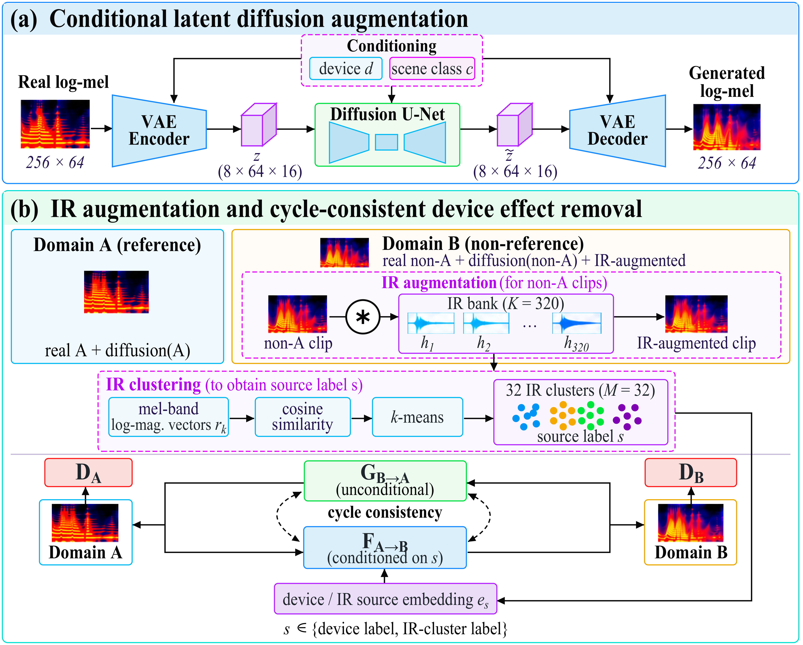
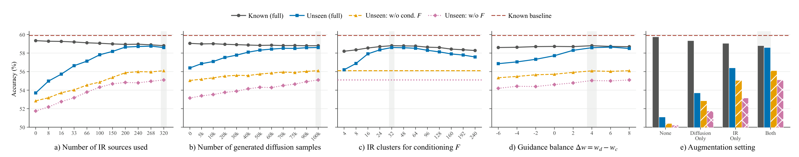
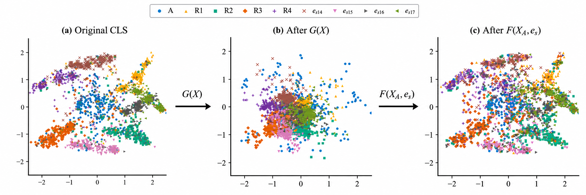

Unseen hardware
Acoustic scene classifiers remain sensitive to recording-device mismatch, especially when the test microphone or consumer device was never observed during training.
GARDEN broadens device variability during training with conditional latent diffusion and microphone impulse-response augmentation, then learns a cycle-consistent many-to-one mapping into a common reference-device domain.

Recording-device mismatch remains a major challenge for acoustic scene classification (ASC), especially on unseen hardware, while prior one-to-one translation methods require device-specific generators during training. We propose GARDEN, a many-to-one device normalization framework that maps heterogeneous recordings to a common reference domain using a single test-time generator. A conditional latent diffusion model generates device- and scene-conditioned spectrograms, while impulse-response augmentation broadens device variability during training. These samples are combined with real recordings to train a cycle-consistent LSGAN, where the forward generator removes device effects and the reverse generator is conditioned on the source device or IR class for source-guided cycle reconstruction. The model uses two generators regardless of device count and only one at inference, without requiring unseen-device identity. Experiments on the TAU benchmark, including unseen simulated and physical devices, show the highest mean unseen-device accuracy and smallest gap among compared methods, despite slightly lower known-device accuracy.
The central challenge is not only to classify sounds accurately, but to prevent a classifier from relying on the recording device. GARDEN explicitly normalizes non-reference recordings before downstream classification.
Acoustic scene classifiers remain sensitive to recording-device mismatch, especially when the test microphone or consumer device was never observed during training.
Pairwise microphone conversion scales poorly with the number of devices and can require the identity of the test device plus a converter already trained for that domain.
GARDEN's forward mapping only needs the reference/non-reference distinction. It does not require unseen-device identity or prior samples from the unseen device at test time.
Learn one unconditional forward generator \(G:B\rightarrow A\) that removes device effects, while using a source-conditioned reverse generator \(F\) only during training to make cycle reconstruction well-defined across a heterogeneous mixture of devices and IR simulations.
The training pipeline combines three complementary components: device- and scene-conditioned latent diffusion, IR-based device simulation, and source-conditioned cycle-consistent device effect removal.
A VAE compresses each \(256\times64\) log-mel spectrogram into an \(8\times64\times16\) latent. A conditional U-Net receives timestep, recording-device, and scene-class information through FiLM modulation in every residual block.
Microphone impulse responses broaden the device characteristics seen during training. Each response is represented by a mean-centered, normalized mel-band log-magnitude profile.
Domain A is the reference-device domain. Domain B contains real non-A recordings, non-A diffusion samples, and IR-augmented recordings. The forward map removes device signatures, while the reverse map is conditioned on the source label.
Device adherence and scene adherence receive different guidance strengths. When \(w_d=w_c\), the factorization collapses to ordinary classifier-free guidance on the joint condition; GARDEN uses stronger device guidance because device diversity is the primary target.
Conditioning the reverse generator on the source device or IR cluster identifies which subdomain of the heterogeneous domain-B mixture should be reconstructed, without forcing \(G\) to preserve device identity.
Evaluation combines the TAU Urban Acoustic Scenes 2022 Mobile benchmark with a physical replay set recorded on eight consumer devices, allowing the paper to test both simulated and real unseen-device generalization.
174,500 training clips and 267,120 test clips.
A, B, C, S1-S3, and physical devices R1-R4.
S4-S6 and physical devices R5-R8.
The evaluation split is not used for training or hyperparameter selection.
The learned normalization generator is evaluated with five backbones: ResNet-50, EfficientNet-B0, CNN14, AST, and ViT-B/16. During both training and testing of the downstream classifier, non-reference-domain clips are first mapped to reference domain A by \(G\).
Under the common evaluation setup, GARDEN reaches the highest mean unseen-device accuracy and the smallest Known-Unseen gap among the compared methods, while accepting a small reduction in Known-device accuracy.
Highest mean unseen-device accuracy in the comparison.
Known 58.8% versus Unseen 58.6%.
Increase in mean unseen accuracy: 45.7% → 58.6%.
| Model | Known | Unseen | Gap | S4 | S5 | S6 | R5 | R6 | R7 | R8 | Δ w/o Aug |
|---|---|---|---|---|---|---|---|---|---|---|---|
| Baseline | 59.9 ± 1.6 | 45.7 ± 1.7 | 14.2 | 48.8 ± 1.6 | 47.5 ± 1.7 | 46.7 ± 1.8 | 45.1 ± 1.6 | 43.9 ± 1.7 | 45.0 ± 1.5 | 42.9 ± 1.9 | 3.3 |
| RFN | 60.2 ± 1.7 | 50.9 ± 1.8 | 9.3 | 52.7 ± 1.7 | 53.7 ± 1.8 | 51.5 ± 1.8 | 50.6 ± 1.7 | 49.5 ± 1.9 | 50.4 ± 1.8 | 48.1 ± 2.0 | 2.5 |
| Freq-MixStyle | 60.4 ± 1.4 | 49.6 ± 1.5 | 10.8 | 51.7 ± 1.4 | 50.8 ± 1.5 | 50.5 ± 1.6 | 50.0 ± 1.5 | 47.3 ± 1.7 | 48.4 ± 1.4 | 48.7 ± 1.6 | 2.6 |
| ConGater | 60.0 ± 1.6 | 52.5 ± 1.7 | 7.5 | 54.5 ± 1.7 | 53.4 ± 1.6 | 53.1 ± 1.8 | 51.7 ± 1.7 | 50.9 ± 1.7 | 54.1 ± 1.6 | 49.6 ± 1.9 | 3.0 |
| CDAN | 59.6 ± 1.8 | 54.2 ± 1.9 | 5.4 | 56.2 ± 1.9 | 55.7 ± 1.8 | 55.0 ± 2.0 | 53.9 ± 1.9 | 52.8 ± 1.8 | 54.0 ± 2.0 | 51.8 ± 1.9 | 3.2 |
| EG-CL | 59.7 ± 1.5 | 55.6 ± 1.6 | 4.1 | 57.6 ± 1.6 | 56.8 ± 1.5 | 56.6 ± 1.7 | 54.9 ± 1.6 | 54.9 ± 1.8 | 55.3 ± 1.6 | 53.2 ± 1.7 | 3.1 |
| MC-200-Gen | 59.8 ± 1.7 | 56.4 ± 1.6 | 3.4 | 59.2 ± 1.6 | 58.0 ± 1.7 | 57.1 ± 1.5 | 56.2 ± 1.6 | 54.4 ± 1.7 | 55.3 ± 1.5 | 54.6 ± 1.8 | 2.1 |
| MC-200-Adapt | 59.7 ± 1.6 | 58.3 ± 1.7 | 1.4 | 60.2 ± 2.0 | 57.8 ± 1.5 | 59.8 ± 1.9 | 57.7 ± 1.6 | 57.5 ± 2.0 | 57.7 ± 1.4 | 57.4 ± 1.6 | 0.8 |
| ASCDomain | 59.3 | 55.6 | 3.7 | 57.2 | 57.2 | 57.6 | 55.3 | 55.0 | 55.9 | 50.8 | 2.3 |
| GARDEN (wd = 6, M = 32) | 58.8 ± 1.3 | 58.6 ± 1.3 | 0.2 | 59.9 ± 1.3 | 59.8 ± 1.2 | 59.5 ± 1.4 | 58.3 ± 1.3 | 57.1 ± 1.5 | 57.8 ± 1.3 | 57.6 ± 1.4 | 7.5 |
Table 1. Device-wise accuracy (%). Known/Unseen are device-macro averages; Gap = Known − Unseen; Δ w/o Aug is the unseen-accuracy drop without IR-based augmentation (except MC) and diffusion-generated samples. ± denotes standard deviation across applicable backbones.
The ablations isolate the number of IR sources, synthetic diffusion pool size, IR-cluster granularity, guidance balance, augmentation type, and the role of the source-conditioned reverse mapping.

More IR sources broaden simulated microphone variability and raise unseen accuracy until the gains begin to saturate.
A larger generated pool adds synthetic diversity and narrows the Known-Unseen gap, with the selected full setting using 100K generated samples.
Conditioning \(F\) on the source device or IR cluster resolves ambiguity in the reverse mapping; removing this conditioning consistently hurts unseen-device generalization.
ViT-B/16 final-layer CLS embeddings for the metro station class show how device-dependent structure changes through the learned normalization and source-conditioned reconstruction.

The paper additionally evaluates GARDEN with the lightweight CP-Mobile + knowledge-distillation classifier on the DCASE 2025 Task 1 evaluation split. Organizer-provided private-label scores are used for devices D and S7-S10.
Reference classifier without GARDEN.
+5.4 percentage points in unseen-device accuracy.
Known-Unseen gap, as evaluated by the organizers.
| Method | Known | Unseen | Gap | D | S7 | S8 | S9 | S10 |
|---|---|---|---|---|---|---|---|---|
| Karasin JKU | 64.1 | 56.2 | 7.9 | 47.5 | 60.9 | 58.0 | 58.3 | 56.1 |
| Tan SNTLNTU | 62.2 | 55.4 | 6.8 | 49.3 | 58.6 | 59.2 | 52.2 | 57.5 |
| Luo CQUPT | 61.9 | 55.0 | 6.9 | 42.1 | 59.7 | 60.1 | 56.4 | 56.7 |
| Zhang AITHU-SJTU | 60.8 | 56.2 | 4.6 | 51.7 | 58.9 | 57.4 | 55.6 | 57.2 |
| Chang HYU | 61.4 | 54.1 | 7.3 | 46.8 | 58.5 | 56.1 | 53.9 | 55.3 |
| Li NTU | 60.5 | 55.5 | 5.0 | 53.0 | 58.6 | 58.2 | 52.7 | 54.7 |
| Ramezanee SUT | 59.8 | 54.1 | 5.7 | 41.4 | 59.6 | 58.0 | 56.1 | 55.3 |
| CP-Mobile-KD | 62.1 | 55.7 | 6.4 | 43.3 | 61.9 | 59.8 | 55.5 | 58.0 |
| CP-Mobile-KD + GARDEN | 61.6 | 61.1 | 0.5 | 58.9 | 63.5 | 64.5 | 60.1 | 58.6 |
Table 2. Comparison with the best-ranked DCASE 2025 Task 1 system from each selected team. Known/Unseen denote accuracy (%) on seen and unseen devices; device columns show performance on unseen devices D and S7-S10.
The first-place Karasin system uses CP-Mobile with knowledge distillation, diverse augmentation, and extensive pre-training. In this paper, CP-Mobile with KD is paired with GARDEN, which maps non-Device-A samples to Device A during training and evaluation. Although the full GARDEN system is outside the challenge complexity limits, it remains effective with a lightweight classifier.
Mapping heterogeneous non-reference recordings into a common reference domain provides a practical way to reduce device mismatch before acoustic scene classification.
Diffusion-generated data and IR-based simulations target different forms of variability and provide the best generalization when used together.
Training uses two generators, but inference uses only the single forward generator \(G\), without unseen-device identity or a dedicated converter for each new device.
GARDEN improves ASC on unseen devices through source-conditioned cycle consistency together with diffusion and IR augmentation. The method is more expensive during training and slightly reduces seen-device accuracy, but this trade-off is small relative to the gain on unseen devices.